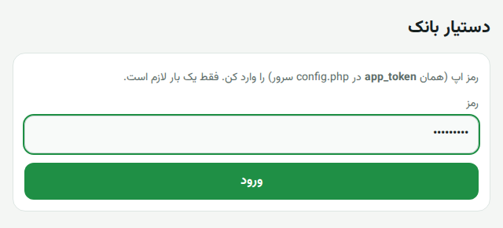
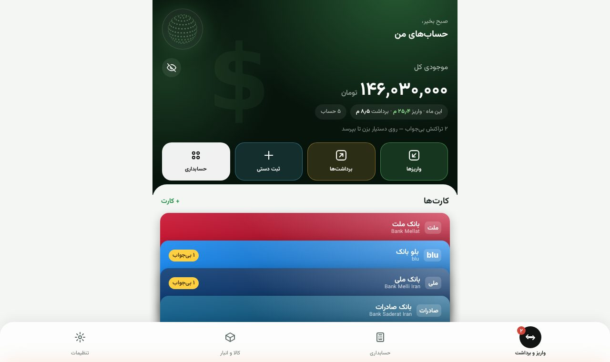
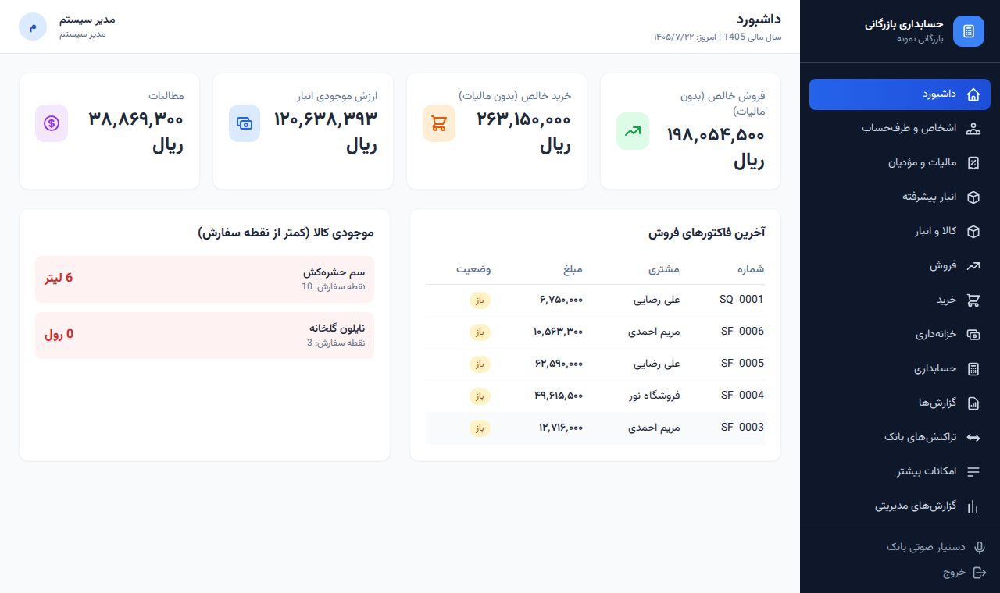
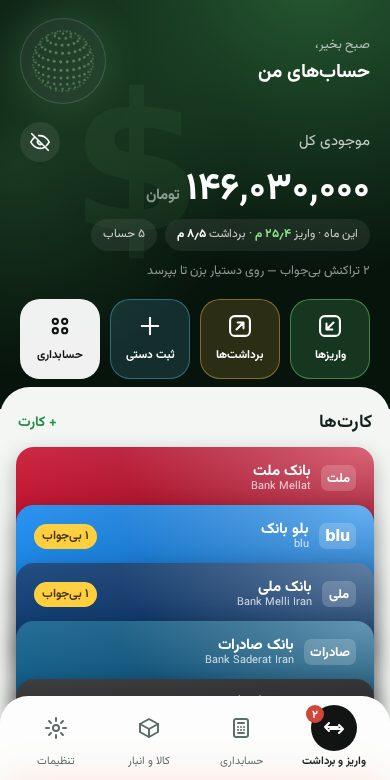
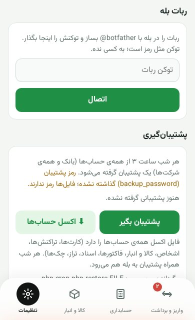

راهنمای تصویری قدمبهقدم؛ بدون هاست و سرور، روی کامپیوتر خودت.
تصویرهای پنجرههای ویندوز طرح سادهشدهاند و ممکن است کمی با کامپیوتر تو فرق داشته باشند؛ تصویرهای برنامه واقعیاند.
روی bank-assistant-local.zip راستکلیک کن و Extract All… را بزن. جای باز شدن را یک مسیر ساده بگذار، مثلاً C:\ (پوشهی C:\bank-assistant ساخته میشود).
C:\bank-assistant بهترین است.در پوشهی C:\bank-assistant فایل start-windows.bat را پیدا کن (آیکن پنجرهی سیاه دارد) و دوبار کلیک کن.
چون فایل از اینترنت آمده، ویندوز ممکن است پنجرهی آبی «Windows protected your PC» نشان دهد. روی More info بزن، بعد Run anyway. فقط بار اول این را میپرسد.
یک پنجرهی سیاه باز میشود و PHP را از سایت رسمی windows.php.net دانلود و در پوشهی php میگذارد. چند دقیقه صبر کن. اگر ویندوز «Visual C++» نداشته باشد، آن را هم نصب میکند (ممکن است یک پنجرهی نصب کوچک ببینی).
ویندوز میپرسد آیا PHP اجازهی شبکه داشته باشد. Private networks را تیک بزن (برای اینکه گوشی و ESP32 روی Wi-Fi خانه وصل شوند) و Allow access را بزن. Public را لازم نیست تیک بزنی.
حالا برنامه روشن است. در پنجرهی سیاه همهی چیزهایی که لازم داری نوشته شده: آدرسها، رمز اپ، PIN رمزهای پویا و رمز پشتیبان. از آن عکس بگیر یا یادداشت کن (همینها در فایل server\config.php هم هست).
نمونه است؛ رمزها و IP روی کامپیوتر تو فرق دارند.
آدرس http://localhost:8080/app/ باز میشود. رمز اپ (مرحلهی ۶) را بزن و ورود. فقط یک بار لازم است.

بعد صفحهی اصلی: کارتهای بانک (ملت، ملی، صادرات، بلو، صندوق)، واریز و برداشتها و دستیار.

تصویر واقعی برنامه با اطلاعات نمونه.
در مرورگر کامپیوتر http://localhost:8080/acc/ را باز کن: کاربر admin و رمز = رمز اپ. بعد از ورود، از «تغییر رمز» یک رمز تازه (حداقل ۱۰ حرف) بگذار. در اپ هم تب «حسابداری» همین پنل را بدون ورود دوباره باز میکند.

گوشی را به همان Wi-Fi کامپیوتر وصل کن و در مرورگرش آدرس On your phone از پنجرهی سیاه را بزن، مثلاً http://192.168.1.20:8080/app/.
اپ اندروید: اپ را نصب کن (فایل server\app\android\bank-assistant.apk) و آدرس http://192.168.1.20:8080/ را بزن.
اپ آیفون: آدرس سرور http://192.168.1.20:8080/api.php و رمز اپ.

در اپ: تنظیمات ← ربات بله. توکن ربات را از @botfather بله کپی کن، اینجا بگذار و «اتصال» را بزن.
اپ یک کد ۶ رقمی نشان میدهد؛ در بله به ربات بفرست: /start 123456 (همان کد).
از این به بعد هر واریز و برداشت در بله پرسیده میشود، هر شب پشتیبان و فایل اکسل حسابها (قفل با رمز پشتیبان) به بله میآید و با /excel هر وقت خواستی اکسل میگیری.

روی کامپیوتر خانه از فریمور Wi-Fi استفاده کن: firmware\sms_forwarder\sms_forwarder.ino. بالای فایل نام و رمز Wi-Fi را بنویس و سه خط SERVER_URL، HEARTBEAT_URL و DEVICE_TOKEN را از پنجرهی سیاه (مرحلهی ۶) کپی کن، بعد Upload.
gprs_forwarder) به کامپیوتر خانه نمیرسد؛ آن برای وقتی است که برنامه روی سرور اینترنتی نصب شده (deploy-vps.sh). راهنمای کامل سیمکشی: firmware\README.md.shell:startup و Enter.C:\bank-assistant\start-windows.bat ← Next ← نام: «دستیار بانک» ← Finish.از این به بعد با روشن شدن ویندوز برنامه هم روشن میشود. اگر کامپیوتر به خواب میرود، در Settings ← System ← Power زمان Sleep را «Never» کن تا ESP32 و بله همیشه جواب بگیرند.
C:\bank-assistant\server\data است، و تنظیمات و رمزها در server\config.php. برای بردن به کامپیوتر دیگر یا نسخهی تازه، همین دو را کپی کن.server\data\backups ساخته و به بله فرستاده میشود (اگر کامپیوتر روشن باشد). دستی: اپ ← تنظیمات ← پشتیبانگیری.server\data و فایل server\config.php قدیمی را در آن کپی کن و از همانجا اجرا کن.php\php.exe server\cron.php rotate-secrets.| چه دیدی | چه کنی |
|---|---|
| PHP could not be downloaded automatically | در مرورگر windows.php.net/download را باز کن، از آخرین PHP 8 فایل ZIP نسخهی x64 Non Thread Safe را بگیر، محتوایش را در C:\bank-assistant\php باز کن طوری که php\php.exe باشد، دوباره start-windows.bat. |
| PHP still does not start / VCRUNTIME140.dll | «Visual C++ Redistributable x64» را از aka.ms/vs/17/release/vc_redist.x64.exe نصب کن. |
| پنجرهی سیاه باز و فوری بسته میشود | در پوشهی برنامه، در نوار آدرس File Explorer بنویس cmd و Enter، بعد بزن start-windows.bat تا پیام خطا را ببینی. |
| Failed to listen on 0.0.0.0:8080 | برنامهی دیگری از پورت ۸۰۸۰ استفاده میکند. start-windows.bat را با Notepad باز کن و set PORT=8080 را مثلاً 8090 کن. |
| گوشی صفحه را باز نمیکند | گوشی و کامپیوتر روی یک Wi-Fi باشند؛ در فایروال php.exe برای Private مجاز باشد (Windows Security ← Firewall ← Allow an app through firewall)؛ Wi-Fi در ویندوز «Private network» باشد نه Public. |
| «رمز اپ نادرست است» یا «تلاش زیاد» | رمز را از server\config.php (خط app_token) بخوان. بعد از ۸ رمز اشتباه، ۱۵ دقیقه صبر لازم است. |
| ربات بله جواب نمیدهد | پنجرهی «jobs and Bale bot» باز باشد و کامپیوتر اینترنت داشته باشد؛ در اپ ← تنظیمات ← ربات بله وضعیت را ببین. |
دستیار بانک و حسابداری · راهنمای ویندوز · مهر ۱۴۰۵ · راهنمای متنی کوتاه: LOCAL-README.txt